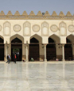

| العنوان الرئيسي
|
| العنوان الفرعي |
|  وتقدمها، ولذا أصبح من الضروري للأمم العريقة ذات التاريخ الطويل المجيد أن تؤرخ لتاريخها، وأن تدعم هذا بتوثيق تراثها الحضاري والفكري والإبداعي في مختلف المجالات. ولما كان الأزهر الشريف هو الأمين على الدين الإسلامي، والمدافع عن ذاتيته. فهو بحق رمز الفكر والعلم جامعةً ومسجداً، مجداً واريخاً، فالأزهر هو عرين الأمة الإسلامية ودرعها. وعلى هذا فلقد حرص الأزهر الشريف على توثيق هذا التاريخ العظيم، وما شهده من الأحداث المختلفة على مر العصور، والعمل على تعريف العالم أجمع بهذا الصرح العظيم الذي ضم في جوانبه المتعددة تاريخاً مجيداً، وتتولى مكتبة |
| العنوان الرئيسي الثاني اذ وجد
|
| العنوان الفرعي |
| وتقدمها، ولذا أصبح من الضروري للأمم العريقة ذات التاريخ الطويل المجيد أن تؤرخ لتاريخها، وأن تدعم هذا بتوثيق تراثها الحضاري والفكري والإبداعي في مختلف المجالات. ولما كان الأزهر الشريف هو الأمين على الدين الإسلامي، والمدافع عن ذاتيته. فهو بحق رمز الفكر والعلم جامعةً ومسجداً، مجداً واريخاً، فالأزهر هو عرين الأمة الإسلامية ودرعها. وعلى هذا فلقرخ لتاريخها، وأن تدعم هذا بتوثيق تراثها الحضاري والفكري والإبداعي في مختلف المجالات. ولما كان الأزهر الشريف هو الأمين على الدين الإسلامي، والمدافع عن ذاتيته. فهو بحق رمز الفكر والعلم جامعةً ومسجداً، مجداً واريخاً، فالأزهر هو عرين الأمة الإسلامية ودرعها. وعلل على تعريف العالم أجمع بهذا الصرح العظيم الذي ضم في جوانبه المتعددة تاريخاً م حرص الأزهر الشريف على توثيق هذا التاريخ العظيم، وما شهده من الأحداث المختلفة على مر العصور، والعمل على تعريف العالم أجمع بهذا الصرح العظيم الذي ضم في جوانبه المتعددة تاريخاً مد حرص الأزهر الشريف على توثيق هذا التاريخ العظيم، وما شهده من الأحداث المختلفة على مر العصور، والعمل على تعريف العالم أجمع بهذا الصرح العظيم الذي ضم في جوانبه المتعددة تاريخاً مجيداً، وتتولى مكتبة |